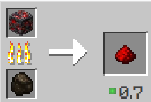

Redstone
Redstone dust is a mineral that can transmit redstone power as a wire when placed as a block. It is also used in crafting and brewing.

Smelting
| Name | Ingrediants | Smelting recipe |
|---|---|---|
| Redstone Dust | Redstone Ore or Deepslate Redstone Ore + Any fuel |
 |
Usage
Redstone dust is used for brewing, crafting, and in redstone circuits by placing it on the ground to create redstone wire. It can also be used to power redstone components.